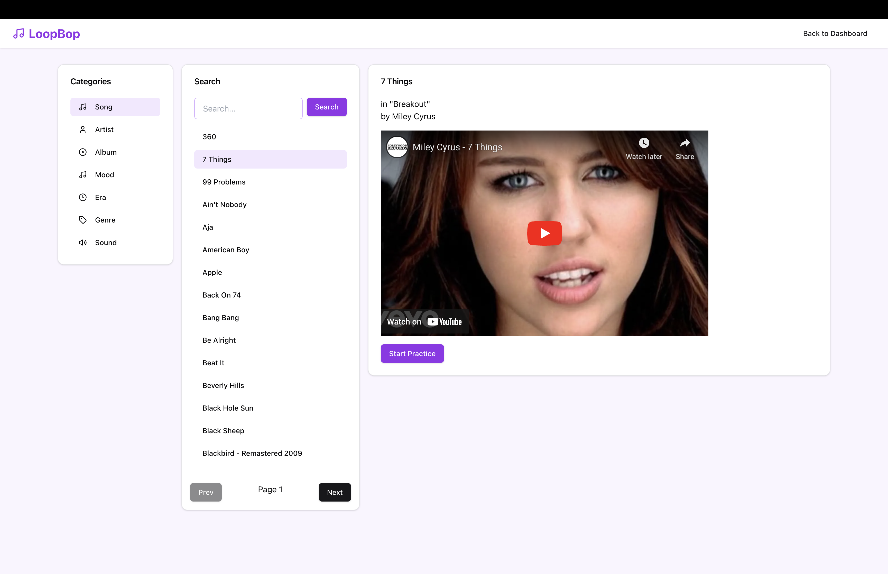
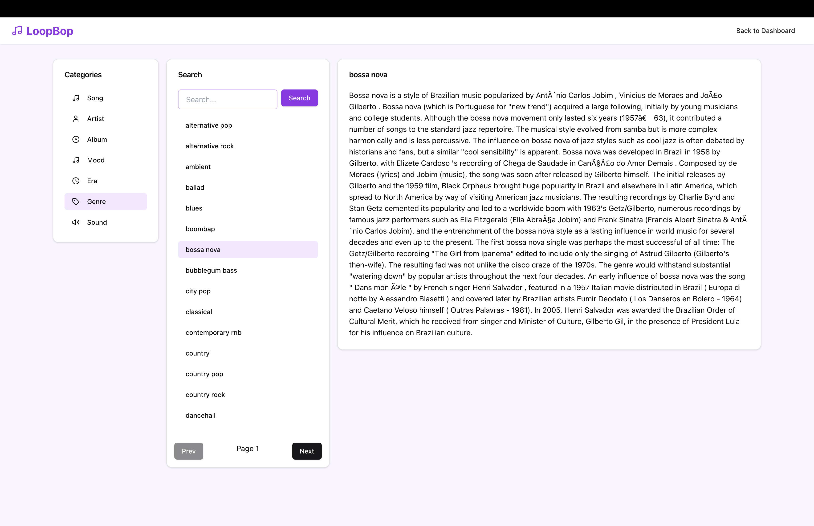

Have you ever had a musical idea but struggled to express it in technical terms? You're not alone. Many beginner music creators face challenges in describing their creative visions using precise musical jargon. This gap can hinder their ability to effectively utilize tools like Suno or Udio to create unique and compelling music.
Introducing LoopBop, a "music-prompting trainer" designed to empower creators by teaching them how to describe their musical ideas. LoopBop focuses on four key musical concepts—Genre, Era, Mood, Sound (G.E.M.S)—to help users build a strong foundation in music terminology and write creative prompts that inspire better AI-generated music.
Key Features
LoopBop transforms the learning process with interactive and gamified tools:
- Personalized Quizzes: Gamified quizzes challenge users to identify G.E.M.S tags for music clips, similar to Duolingo for language learning.
- Tag Exploration: Explore G.E.M.S tags with database queries powered by Neo4j, revealing connections between genres, artists, and sounds.
- Playground: Experiment with AI music generation using LoopBop’s enhanced prompting tool.
Quiz Interface: Learning through short music clips
Users can log in, track their stats (favorite genres, quiz accuracy, and progress), and unlock advanced features through a premium subscription. With MongoDB for user management and Neo4j for graph-based exploration, LoopBop offers a seamless and engaging experience for music enthusiasts.
 Neo4j-powered db: Exploring music tags
What’s Next?
We’re excited to continue refining LoopBop with user feedback. Future updates will include advanced AI-powered analytics and personalization features for premium users. Our goal is to become the go-to platform for anyone looking to explore AI-driven music creation.